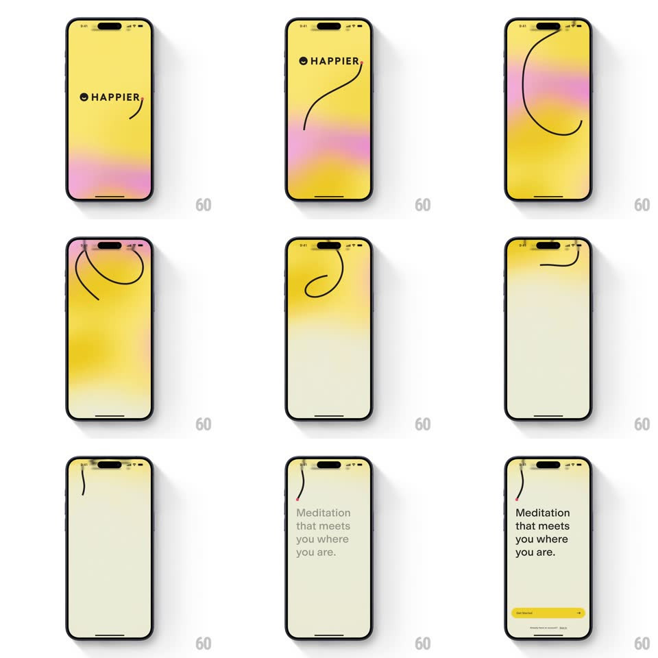

Media
Frame-by-frame

Rebuild this animation 1:1: Happier's splash-to-onboarding - on a yellow screen the "HAPPIER" wordmark appears, then a single hand-drawn black line takes off and playfully loops and swoops across the screen as the background melts through pink gradients into a pale onboarding screen where the line settles and "Meditation that meets you where you are." appears.

Rebuild this animation 1:1: Happier's splash-to-onboarding - on a yellow screen the "HAPPIER" wordmark appears, then a single hand-drawn black line takes off and playfully loops and swoops across the screen as the background melts through pink gradients into a pale onboarding screen where the line settles and "Meditation that meets you where you are." appears. ## Integration Integration: stack-agnostic spec - springs given as stiffness/damping, timed motions as duration + curve; map every value to your framework and animation library of choice. ## Scene Splash: bright yellow field, black "HAPPIER" wordmark whose "A" dot is a smiley. Onboarding: pale cream screen, headline "Meditation that meets you where you are.", a yellow Get Started button, and the traveling line resting as a small squiggle accent near the top. ## Motion spec Pattern: traveling scribble-line transition. - Wordmark fades in (300ms); a pink gradient wash rises from the bottom (600ms ease-in-out). - A thin black line starts drawing from the wordmark's smiley dot and travels freely - loops, S-curves, a big swoop off the top edge - drawing at a constant pen speed (~2.5s total) with slight width wobble (2-3px). - As the line travels, the yellow background crossfades to pale cream (800ms), following the line's progress rather than a flat wipe. - The line settles into a small accent squiggle near the top of the onboarding layout (its last 300ms of travel decelerates). - Headline fades + rises 10px (300ms), button fades in 150ms later. ## Calibration - The line is one continuous stroke for the whole sequence - it never lifts or jumps. - Background color transition is keyed to line progress, so they always feel causally linked. ## Reduced motion Line draws once along a simple arc; background crossfades flat. ## Don't miss - The line originates from the smiley dot in the logo - the brand mark literally launches the doodle. - The final squiggle position aligns with the headline block, becoming part of the layout.